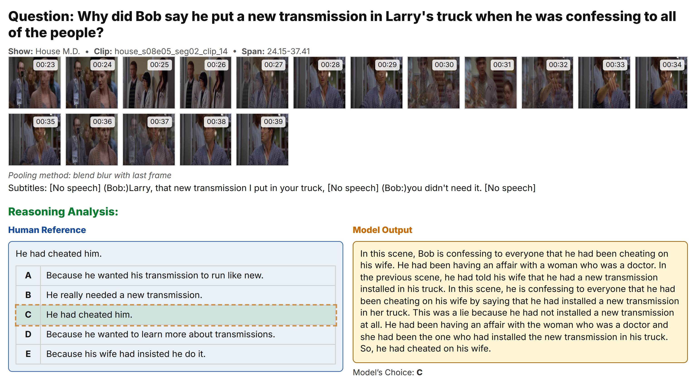
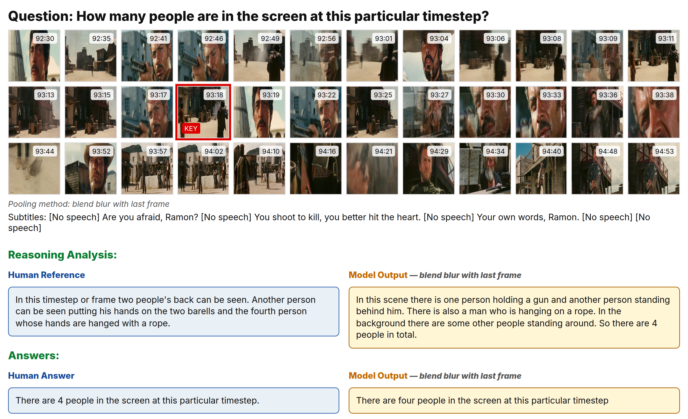
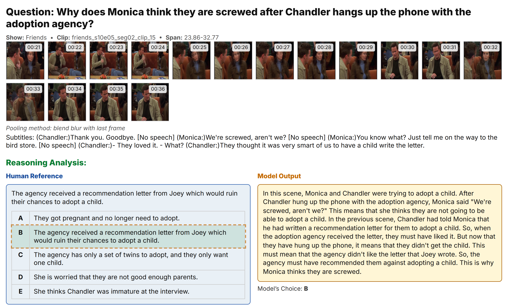

POVQA
Preference-Optimized Video Question Answering with Rationales for Data Efficiency
Abstract
We introduce POVQA, a data-efficient pipeline for video question answering that addresses the critical challenge of long video understanding. Our method compresses each second of video into a single temporally pooled image via motion blur and weighted averaging variants, then aligns Large Vision-Language Models with lightweight supervision. We achieve a 23× reduction in context tokens while maintaining comprehensive temporal coverage. Using our novel ReasonVQA dataset with only 239 human-annotated QA pairs, we demonstrate dramatic improvements: F1 score from 0.212 to 0.543, BLEU-4 from 0.031 to 0.291, and ROUGE-L from 0.196 to 0.528. Zero-shot evaluation on TVQA achieves 64.7% accuracy, surpassing prior zero-shot methods.
Key Results
Qualitative Results
Representative examples showing POVQA's reasoning capabilities and temporal understanding across different video contexts
Example 1: Character Interaction
Multi-character dialogue scene with temporal pooling visualization

Example 2: Action Sequence
Motion-heavy scene with blend blur pooling effectiveness

Example 3: Temporal Reasoning
Long sequence requiring understanding of temporal relationships

Example 4: Cross-Modal Understanding
Short scene with both textual and visual cues

Method Overview
POVQA tackles the challenge of processing long videos (up to 5 minutes) within LLM context limits through intelligent temporal pooling. Our pipeline consists of four key innovations:
Temporal Pooling: Four novel operators (Blend Blur, Weighted Average, Exponential, Ramp) compress 24-60 frames into single representative images.
Subtitle Alignment: Interleaved text-image sequences maintain temporal coherence while maximizing information density.
Rationale Supervision: Two-stage fine-tuning with reasoning chains and direct preference optimization.
POVQA Pipeline
Raw Video → Temporal Pooling → Subtitle Alignment → QLoRA SFT → DPO → Enhanced VQA
Temporal Pooling Operators
Blend Blur with Last Frame (BBLF)
Combines motion-blurred average with sharp final frame
Weighted Average (WA)
Uniform weighting across all frames in window
Weighted Average Exponential (WAE)
Exponential recency bias for recent frames
Weighted Average Ramp (WAR)
Linear recency weighting scheme
Architecture Pipeline
Performance Comparison
| Method | F1 Score | BLEU-4 | ROUGE-L | Embed Cosine |
|---|---|---|---|---|
| Baseline (No Fine-tuning) | 0.212 | 0.031 | 0.196 | 0.383 |
| POVQA (SFT Only) | 0.545 | 0.278 | 0.520 | 0.632 |
| POVQA (SFT + DPO) | 0.543 | 0.291 | 0.528 | 0.631 |
Key Contributions
Human-rationale dataset over 12 movies (239 QAs) from different genres for supervised fine-tuning and preference training
Interleaved text-image baseline that compresses up to 5 minutes into ≤60 pooled visual tokens aligned with subtitles
Head-to-head study of blend-blur, weighted, exponential, and ramp averages under SFT→DPO training paradigm
Evaluation beyond ReasonVQA demonstrates best zero-shot results on TVQA, showing cross-domain transfer capability
Zero-shot TVQA Performance
| Method | Zero-shot | Accuracy (%) |
|---|---|---|
| POVQA (Ours) | ✓ | 64.7 |
| FrozenBiLM (w/ speech) | ✓ | 59.7 |
| GPT-4V | ✓ | 57.8 |
| IG-VLM (LLaVA-1.6 34B) | ✓ | 51.1 |
| Goldfish-7B (vision+subs) | ✓ | 46.9 |
| Q-ViD | ✓ | 41.0 |